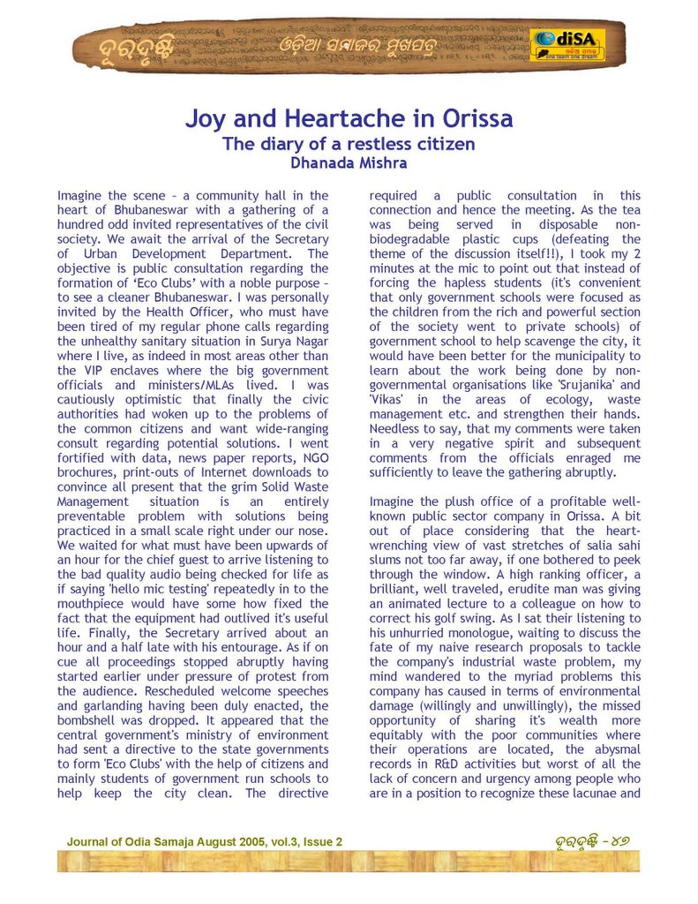

Original saved page image · read-only archive
Duradrusti · August 2005 · page 47
New HTML navigation around the original saved production image. This is not a captured original reader page.


Source notes
MyCommunity/DDAug2005/dd32_opf_files/dd3_2_Page_47.jpg
Page order: dd32.opf. Original image pattern and page links: Main.asp; final page 82: left.asp. The image is preserved byte-for-byte; the original server program and controls are inactive.